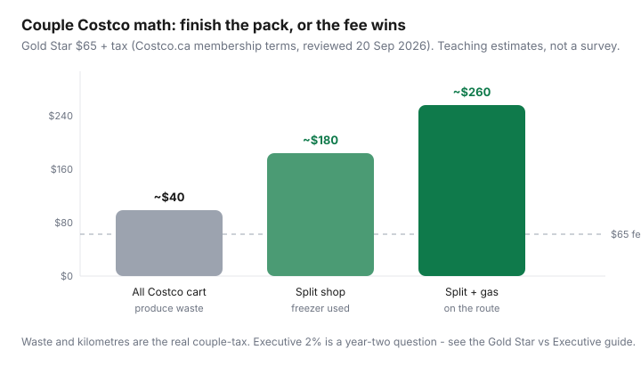

Food & Groceries · Canada
Is Costco worth it for couples in Canada? A small-household framework
Couples hear two stories. One: Costco is “for families only,” so a two-person kitchen should stay at No Frills forever. Two: a Saturday haul video, a 1.36 kg clamshell of greens, and a membership they resent by week three. Both miss the actual product. For two adults who cook most nights, Costco Canada is often worth Gold Star — if you buy what you finish, treat the freezer as the real constraint, and keep a discounter in the week.
This is a small-household playbook: SKUs that work for two, household-card rules (same address, 16+), why Executive can wait, the split shop that Personal Finance Canada keeps repeating, and a 90-day experiment you can cancel if the receipts lie. It is not a family-of-four guide and it is not U.S. Costco Anywhere Visa advice. Canadian warehouses take Mastercard and debit.
Disclosure: Costco memberships and the CIBC Costco Mastercard (Canada’s warehouse card — not the U.S. Costco Anywhere Visa) are offer types. Grocery shop cards via cashback portals are another. Saving Optimizer may earn a commission if we later add partner links. We do not currently claim a partnership with Costco or CIBC. Join Gold Star only after you run your 90-day math. Nothing here requires a click.
Key takeaways
- Gold Star is $65/year plus tax (Costco.ca membership terms, reviewed 20 Sep 2026) and includes one household card for someone 16+ at the same address — proof of residence can be asked.
- Couples usually clear the fee on pantry, coffee, frozen fruit, paper, and proteins they portion the same day — not on warehouse produce volume.
- Freezer litres, not “we love Costco,” decide whether a family pack is a win or compost.
- Start Gold Star. Executive’s extra $65 wants about $3,250 of eligible pre-tax merchandise. Gas and the food court do not count toward 2%.
- Keep a weekly discounter. An all-Costco cart is how two people overbuy.
SKUs that work for two without waste
The Canadian split-shop consensus (Personal Finance Canada threads, CostcoCanada, Quebec how-tos such as Aubaine) is not “Costco is cheaper groceries.” It is cheaper on a list of formats you will finish. For two people that list is shorter than a family haul, and that is the point.
| Usually a couple win | Usually a couple trap | Toss-up |
|---|---|---|
| Olive oil, coffee, oats, nuts, rice you already cook | Clamshell greens, berries for “snacking,” giant bakery | Eggs (watch unit price vs No Frills / Maxi / Superstore) |
| Frozen berries and mixed vegetables | Second ketchup, third sauce, novelty snacks | Yogurt tubs if you portion; grave if you do not |
| Toilet paper, detergent, dishwasher tabs | Produce you will not cut on Sunday | Cheese (freeze or cook into a plan) |
| Chicken / salmon family packs portioned tonight | Prepared foods as a “membership treat” every trip | Rotisserie chicken vs leftover soup math |
Worked example (labelled, not a survey): Kirkland olive oil, a large coffee, frozen berries, paper, and one chicken family pack frozen in meal bags. Versus discounter national-brand equivalents over a year, a couple who actually eats the food often lands in the $150–$300 unit-price gap — enough to bury the $65 fee. The couple who composts the berries and impulse bakery can land under $65 and feel cheated. That is a shopping problem, not a warehouse conspiracy.
Tax-in habits still matter. Basic groceries are generally GST/HST-zero-rated; snacks, carbonated drinks, and many prepared foods may not be. Compare the sticker you will actually pay. Details on the broader fee question live in Is Costco membership worth it?

Freezer capacity as the real constraint
A Costco chicken pack is not a protein strategy until it is in labelled bags. Measure the freezer you have — apartment fridge-top, garage chest, or a shared condo locker that is already full of someone else’s ice cream. If you cannot freeze flat portions the same night, do not buy the family pack. Buy the discounter tray you will cook this week.
Write a not-list on the freezer door: no second bag of berries until the first is gone; no warehouse salad kits; no “backup” bread if last month’s loaf is still frost. That is the same discipline as food-waste systems. Love Food Hate Waste Canada’s ~$1,300 household sketch is a national average; two people still throw out expensive greens on a faster clock than a family of five.
Apartment test: if the freezer is under about 80 litres and already holds ice and leftover soup, your Costco list is pantry, paper, coffee, and frozen fruit that replaces produce you would have wilted anyway. Meat waits until you clear space — or you skip that aisle.
Cooling and food-safe freezing (two-hour fridge rule, shallow containers) belong in the batch-cooking guide. For membership math, the only question is: will this pack become meals or compost?
Sharing membership household rules
Costco Wholesale Canada’s membership conditions (page dated 1 Aug 2026; fees and household rules reviewed 20 Sep 2026) are strict enough that couples should read them once:
- Gold Star is $65 plus applicable tax for 12 months from the Primary’s enrolment. That includes one personalized Primary card and one household card.
- The household cardholder must be over 16 and living at the same address. Costco may ask for proof of residence. Cards have photos. They are not transferable. You do not “take turns” on one barcode.
- The Primary is responsible for the membership and must authorize cardholder changes. Termination of the Primary ends associated cards.
- Costco states it will cancel and refund the membership fee if you are dissatisfied — read the current counter copy; electronics and other merchandise have separate return limits.
- Guests: warehouse guest rules are not a loophole for a roommate who does not qualify. Do not bluff the door.
Two adults in one rental: this is the intended use. Two adults in different apartments: you are not a household. A parent in another city is not a household card. If you are dating but not cohabiting, buy Gold Star for the person who will actually shop, or wait until the address matches. Digital cards on costco.ca need separate accounts per membership number.
Payment at Canadian warehouses is Mastercard and debit, not Visa or Amex at the till. The CIBC Costco Mastercard is a cash-back / shop-card product. Match the network in grocery cards by banner. Do not import a U.S. “Costco Anywhere Visa” plan.
Gold Star first; Executive later
Executive is $130 plus tax — another $65 versus Gold Star — for 2% on eligible pre-tax merchandise, with a published cap and a long exclusion list (gas, food court, pharmacy, and many services typically do not count). The ~$3,250 eligible-spend break-even is a different article: Executive vs Gold Star.
For two people in year one, default Gold Star. You do not yet know your eligible merchandise, your waste, or whether you will still like the parking lot in February. Upgrade after a year of receipts, not at the membership desk while you are hungry.
Limit of one Executive membership per household still applies if you were tempted to “stack” two Executives. You were not going to. Don’t.
Split shop with a discounter still required
An all-Costco couple cart is how you buy a month of produce on Saturday and compost it on Thursday. The working rhythm is the same as Costco vs No Frills cart split: warehouse monthly for oils, coffee, frozen fruit, paper, and proteins you freeze; discounter weekly for flyer meat, short-life produce, milk, and loaded loyalty offers.
Swap the discounter logo for the one you can actually reach: No Frills or Superstore (PC Optimum), FreshCo (Scene+), Food Basics (Moi offers), Maxi or Super C in Quebec, Save-On-Foods in the West. Costco is bulk. It is not a fourth discounter and it will not price-match a Super C flyer.
Gas on the route is Gold Star value when the station exists — still not Executive 2%. Optical and pharmacy can pay for a year in one visit, or not, if your benefits plan already covers a local shop. Get a quote. Food court is lunch.
90-day experiment plan
- Join Gold Star only. Add the household card the same day with ID and address proof ready.
- Write a 12-line warehouse list from empty bins at home — not from the endcap. Shop that list plus one planned protein. No “while we’re here.”
- Same night: portion and freeze. Label. Update the freezer door list.
- Keep every receipt. Mark each line: would we have bought this at our discounter, at what unit price, and did we eat it?
- Log thrown-out Costco food and extra kilometres versus the usual store.
- At day 90: (documented unit-price wins) − (waste) − (travel) − (pro-rated $65). If it is not clearly positive, use the membership guarantee terms or stop going. Only then open the Executive spreadsheet.
If you hate the warehouse, you are allowed to leave. Costco is a tool for two people who already cook. It is not a personality and it is not cheaper than a discounter on every SKU. Run 90 days. Renew or walk.
Sources & date stamps
- Costco Wholesale Canada Ltd., Membership Conditions & Regulations (page dated 1 Aug 2026): Gold Star $65, Executive $130, household card 16+ same address, proof of residence, membership satisfaction refund language (reviewed 20 Sep 2026).
- Costco.ca / Costco Canada customer service: digital card (separate costco.ca account per member), household FAQ.
- Personal Finance Canada and r/CostcoCanada split-shop vs discounter consensus (community pattern, not a survey).
- Aubaine, Costco vs neighbourhood grocery in Quebec (when membership pays off).
Frequently asked questions
Is Costco worth it for two people in Canada?
Often yes on Gold Star if you cook most nights, live near a warehouse, finish bulk pantry and frozen goods, and still shop a discounter weekly. Often no if produce volume becomes waste, the freezer is full, or the trip is a weekend outing that always includes unplanned merch. Run 90 days of receipts.
Can a couple share one Costco membership?
Yes, that is what the household card is for: one Primary and one person 16 or older living at the same address, each with a photo card. Costco may ask for proof of residence. Cards are not transferable. Roommates at a different address do not qualify.
Should couples buy Executive in year one?
Usually no. Gold Star first. Executive costs $65 more and 2% applies only to eligible pre-tax merchandise — gas, food court, and many services typically excluded. The ~$3,250 eligible-spend break-even is a separate decision after you have a year of actual warehouse spend.
What should couples never buy at Costco?
Anything you will not finish: giant clamshell greens, berries without freezer space, duplicate condiments, and bakery that is actually entertainment. Family meat packs are fine only if they are portioned and frozen the same day.
Do we still need No Frills or another discounter?
Yes. Costco tends to lose on small produce runs and many flyer loss-leaders. Keep a weekly discounter (No Frills, FreshCo, Food Basics, Maxi, Super C, or Save-On, depending on the city) and use Costco as a monthly bulk stop.